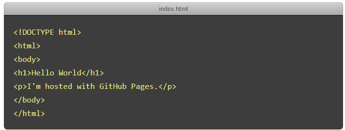

GitHub Pages
Websites for you and your projects.
Hosted directly from your GitHub repository. Just edit, push, and your changes are live.

Ready to get started? Build your own site from scratch or generate one for your project.
You get one site per GitHub account and organization,
and unlimited project sites. Let's get started.
1
Create a repository
Head over to GitHub and create a new public repository named username.github.io, where username is your username (or organization name) on GitHub.
If the first part of the repository doesn’t exactly match your username, it won’t work, so make sure to get it right.
?
What git client are you using?
2
Clone the repository
Click the "Set up in Desktop" button. When the GitHub desktop app opens, save the project.
If the app doesn't open, launch it and clone the repository from the app.
3
Create an index file
Grab your favorite text editor and add an index.html file to your project:
4
Create an index file
Grab your favorite text editor and add an index.html file to your project:

5
…and you're done!
Fire up a browser and go to https://username.github.io.